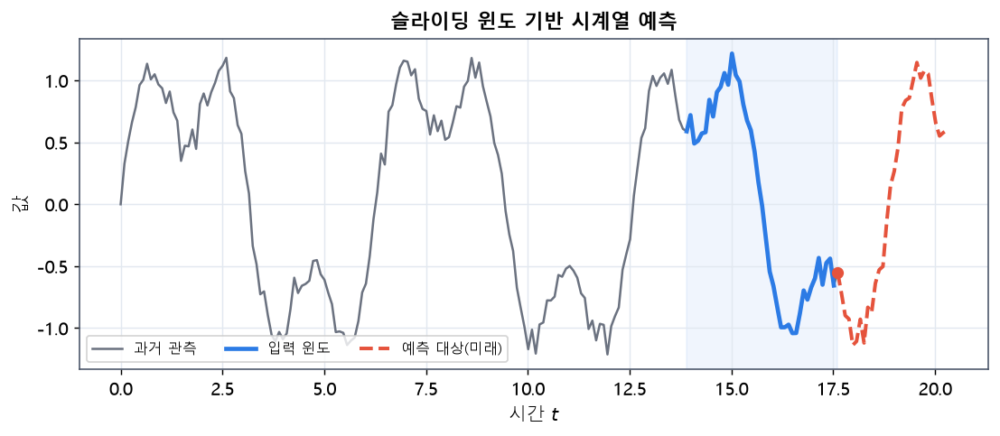
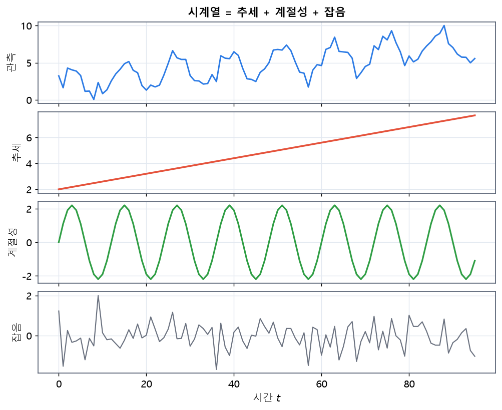
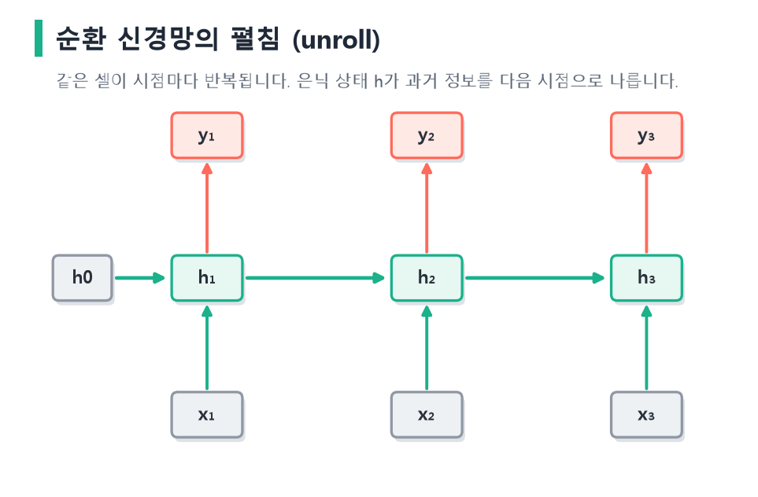
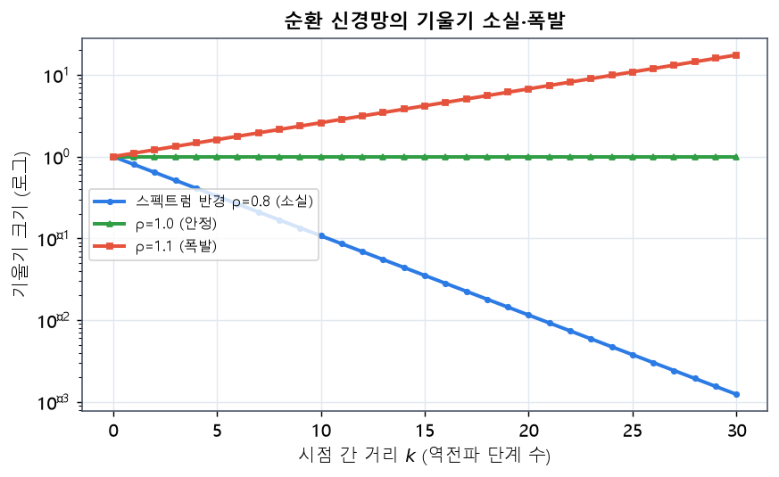
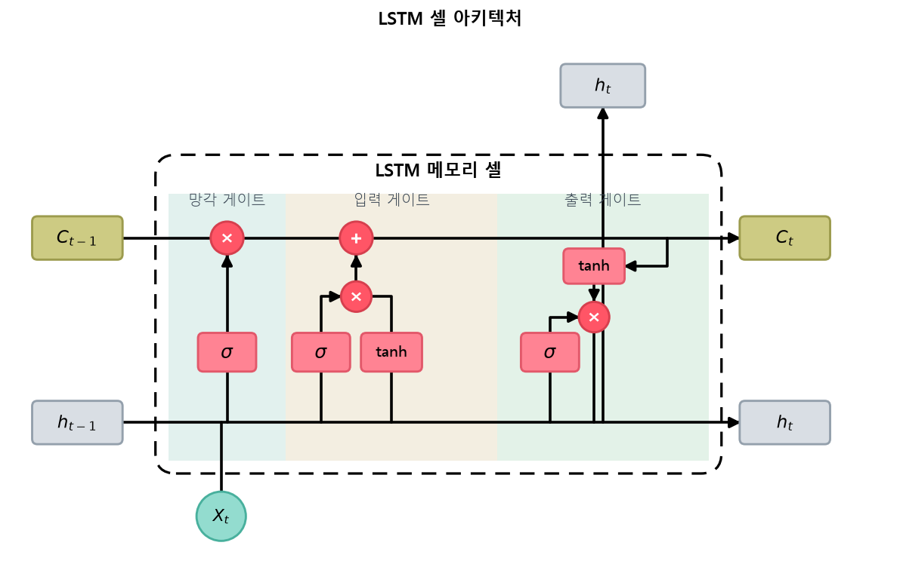
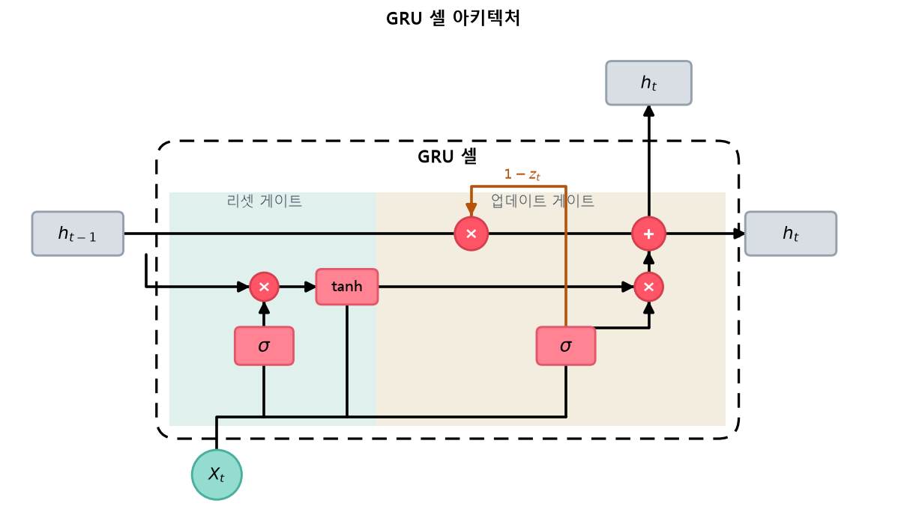
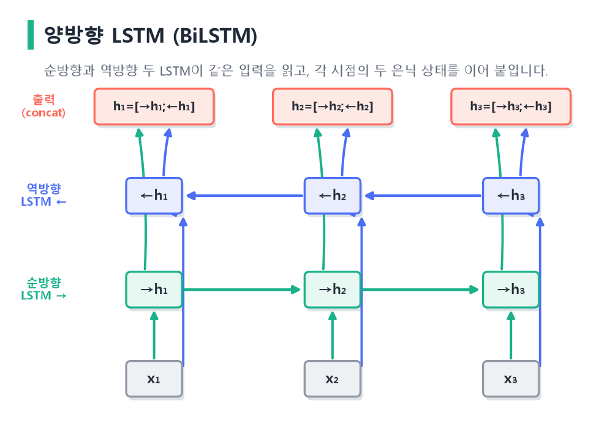

flowchart LR
AR["AR(p)<br/>과거 값"] --> ARMA["ARMA(p,q)"]
MA["MA(q)<br/>과거 오차"] --> ARMA
ARMA -->|"+ d차 차분"| ARIMA["ARIMA(p,d,q)<br/>비정상 시계열 처리"]
7 RNN·LSTM·GRU 기반 시계열 모델링
이 장은 시간 순서가 있는 데이터를 다루는 순환 신경망 계열을 깊이 있게 살펴봅니다. 먼저 고전 통계 시계열 모델(AR, MA, ARMA, ARIMA)로 시계열의 언어를 익힌 뒤, 순환 신경망(RNN)의 셀과 구조, 그 한계인 장기 의존성 문제를 짚습니다. 이어서 이를 해결한 LSTM과 GRU의 게이트 수식을 하나하나 해석하고, 양방향 LSTM까지 확장합니다. 수식은 기호의 의미와 직관을 함께 설명합니다.
7.1 시계열 데이터와 고전 모델
시계열(time series)은 시간 순서로 관측된 값의 나열 \(x_1, x_2, \dots, x_T\)입니다. 주가, 기온, 전력 수요, 센서 신호처럼 과거가 미래에 영향을 주는 데이터가 여기 속합니다. 시계열 예측의 목표는 과거 관측으로부터 미래 값을 추정하는 것입니다(Box & Jenkins, 1970; Hyndman & Athanasopoulos, 2018).

그림 3.1 슬라이딩 윈도 기반 시계열 예측. 과거 일정 구간(파란 입력 윈도)을 보고 그다음 미래 값(빨간 점선)을 예측합니다. 이 윈도를 한 칸씩 옮겨 가며 수많은 (입력, 정답) 쌍을 만들어 순환 신경망을 학습시킵니다.
7.1.1 시계열의 구성요소와 정상성
시계열을 분석할 때는 흔히 데이터를 몇 가지 구성요소로 나눠 이해합니다. 추세(trend)는 장기적으로 값이 오르거나 내리는 경향이고, 계절성(seasonality)은 하루·일주일·일 년처럼 일정한 주기로 반복되는 패턴입니다. 여기에 규칙으로 설명되지 않는 불규칙(잡음) 성분이 더해집니다. 예컨대 전력 수요는 여름·겨울에 높아지는 계절성, 해가 갈수록 늘어나는 추세, 그리고 예측하기 어려운 일별 변동을 함께 가집니다.

그림 3.2 시계열의 구성요소 분해. 맨 위의 관측 시계열은 아래 세 성분—우상향하는 추세, 주기적으로 반복되는 계절성, 그리고 무작위 잡음—의 합으로 이루어집니다. 시계열 모델링은 이런 구조를 포착해 미래를 예측하는 일입니다.
시계열 모델링에서 가장 중요한 개념 중 하나가 정상성(stationarity)입니다. 정상 시계열이란 시간이 흘러도 평균·분산·자기상관 구조가 변하지 않는 시계열을 말합니다. 많은 고전 모델이 정상성을 가정하는데, 그 이유는 과거의 통계적 성질이 미래에도 유지되어야 과거로부터 미래를 추정할 수 있기 때문입니다. 추세나 계절성이 있는 시계열은 비정상적이므로, 차분이나 계절 조정으로 정상화한 뒤 모델을 적용합니다.
시계열의 내부 구조를 진단하는 도구로 자기상관함수(ACF)와 편자기상관함수(PACF)가 있습니다. ACF는 시계열과 그 자신을 \(k\)시점 지연시킨 것 사이의 상관을 나타내고, PACF는 그 사이의 중간 시점 영향을 제거한 순수한 상관을 나타냅니다. 두 함수의 모양을 보면 AR·MA의 차수를 가늠할 수 있어, 전통적 시계열 분석에서 모델을 고르는 근거가 됩니다. 지연 연산을 간결히 쓰기 위해 백시프트 연산자 \(B\)를 도입하기도 하는데, \(Bx_t = x_{t-1}\)로 정의되어 \(B^k x_t = x_{t-k}\)가 됩니다. 이 표기를 쓰면 1차 차분은 \(\nabla x_t = (1-B)x_t\)로 간단히 표현됩니다.
7.1.2 자기회귀 모델 (AR)
자기회귀(AutoRegressive, AR) 모델은 현재 값을 과거 값들의 선형 결합으로 설명합니다. 차수 \(p\)의 AR(\(p\))는 다음과 같습니다.
\[ x_t = c + \sum_{i=1}^{p}\phi_i\, x_{t-i} + \varepsilon_t, \]
여기서 \(\phi_i\)는 과거 \(i\)시점 값의 영향력을 나타내는 계수, \(c\)는 상수, \(\varepsilon_t\)는 백색잡음입니다. 즉 “오늘은 최근 \(p\)일의 값으로 결정된다”는 가정입니다.
7.1.3 이동평균 모델 (MA)
이동평균(Moving Average, MA) 모델은 현재 값을 과거 예측 오차(충격)들의 선형 결합으로 설명합니다. 차수 \(q\)의 MA(\(q\))는 다음과 같습니다.
\[ x_t = c + \varepsilon_t + \sum_{j=1}^{q}\theta_j\, \varepsilon_{t-j}. \]
여기서 \(\varepsilon_{t-j}\)는 과거의 예측 오차이고 \(\theta_j\)는 그 오차가 현재에 남기는 영향입니다. AR이 과거 “값”을, MA가 과거 “충격”을 본다는 점이 핵심 차이입니다.
7.1.4 ARMA와 ARIMA
ARMA(\(p,q\))는 AR과 MA를 결합합니다.
\[ x_t = c + \sum_{i=1}^{p}\phi_i x_{t-i} + \varepsilon_t + \sum_{j=1}^{q}\theta_j \varepsilon_{t-j}. \]
ARMA는 정상성(stationarity), 즉 평균·분산이 시간에 따라 변하지 않는다는 가정을 필요로 합니다. 그러나 실제 시계열은 추세를 가진 경우가 많아 비정상적입니다. ARIMA(\(p,d,q\))는 원계열을 \(d\)번 차분(differencing)해 정상화한 뒤 ARMA를 적용합니다. 1차 차분은 다음과 같습니다.
\[ \nabla x_t = x_t - x_{t-1}. \]
이 모델들이 잘 작동하려면 조건이 필요합니다. AR 모델이 정상적이려면 계수 \(\phi_i\)가 일정 조건(특성방정식의 근이 단위원 밖에 있을 것)을 만족해야 합니다. 직관적으로는, 과거 값의 영향이 시간이 지나며 점점 줄어들어야 값이 발산하지 않고 안정된다는 뜻입니다. AR(\(p\))와 MA(\(q\))의 차수 \(p, q\)는 앞서 소개한 ACF·PACF의 모양을 보고 정하며, 실제 분석에서는 여러 차수를 시도해 정보 기준(AIC, BIC)으로 가장 좋은 모델을 고릅니다. 계절성이 강한 데이터에는 계절 차분과 계절 항을 더한 SARIMA로 확장하기도 합니다.
고전 모델은 해석이 명확하고 데이터가 적어도 잘 작동하며, 계수 하나하나가 “며칠 전 값이 오늘에 미치는 영향”처럼 명확한 의미를 가진다는 큰 장점이 있습니다. 그러나 이들은 근본적으로 선형 관계와 정상성 가정에 묶여 있습니다. 현실의 시계열은 비선형적이고, 여러 변수가 복잡하게 상호작용하며, 시간에 따라 성질이 변하는 경우가 많습니다. 예컨대 기온·습도·요일이 전력 수요에 얽히는 비선형 관계는 선형 모델로 담기 어렵습니다. 이런 복잡한 패턴을 데이터로부터 유연하게 학습한다는 점에서 순환 신경망이 강점을 보이며, 그래서 딥러닝 기반 시계열 모델링이 발전해 왔습니다.
7.2 순환 신경망 (RNN)
순환 신경망(Recurrent Neural Network, RNN)은 시퀀스를 시점 순으로 처리하며, 이전까지의 정보를 은닉 상태(hidden state) \(\mathbf{h}_t\)에 담아 다음 시점으로 전달합니다(Elman, 1990; Jordan, 1997). 이 순환 연결이 RNN에 “기억”을 부여합니다.
일반적인 피드포워드 신경망은 입력 하나를 받아 출력 하나를 내고 끝나므로, 입력들 사이의 순서 관계를 다룰 수 없습니다. 문장이나 시계열처럼 순서가 의미를 갖는 데이터에는 이것이 치명적입니다. RNN은 이 문제를 은닉 상태라는 “메모”로 해결합니다. 매 시점 현재 입력과 지금까지의 메모를 함께 읽어 새 메모를 쓰고, 이 메모가 다음 시점으로 이어집니다. 즉 은닉 상태는 처음부터 현재까지 본 모든 입력의 요약본 역할을 하며, RNN은 이 요약을 매 시점 갱신해 나갑니다. 사람이 문장을 왼쪽에서 오른쪽으로 읽으며 앞의 내용을 기억한 채 다음 단어를 이해하는 과정과 닮았습니다.
7.2.1 RNN 셀의 수식
각 시점 \(t\)에서 입력 \(\mathbf{x}_t\)와 이전 은닉 상태 \(\mathbf{h}_{t-1}\)을 받아 새 은닉 상태를 계산합니다.
\[ \mathbf{h}_t = \tanh(W_{xh}\mathbf{x}_t + W_{hh}\mathbf{h}_{t-1} + \mathbf{b}_h), \]
\[ \mathbf{y}_t = W_{hy}\mathbf{h}_t + \mathbf{b}_y. \]
여기서 각 기호의 의미는 다음과 같습니다.
- \(\mathbf{x}_t\): \(t\)시점 입력 벡터
- \(\mathbf{h}_t\): \(t\)시점 은닉 상태(과거 요약)
- \(W_{xh}\): 입력을 은닉으로 보내는 가중치
- \(W_{hh}\): 이전 은닉을 현재 은닉으로 잇는 순환 가중치(모든 시점이 공유)
- \(\tanh\): 은닉 상태를 \((-1,1)\)로 제한하는 비선형 활성화
이 식을 말로 풀면, 새 은닉 상태는 “현재 입력을 변환한 것”과 “이전 기억을 변환한 것”을 더한 뒤 비선형 함수를 통과시킨 결과입니다. 여기서 \(\tanh\)를 쓰는 이유는 은닉 상태 값이 무한히 커지지 않도록 유계로 눌러 주기 위함입니다. 출력 \(\mathbf{y}_t\)는 은닉 상태를 다시 선형 변환해 얻는데, 과제에 따라 매 시점 출력을 쓰기도 하고(다대다), 마지막 시점의 출력만 쓰기도 합니다(다대일). 이처럼 단순한 하나의 식이 시점마다 반복되며 시퀀스 전체를 처리하는 것이 순환 신경망의 우아함입니다.
핵심은 가중치 \(W_{xh}, W_{hh}\)가 모든 시점에서 동일하게 공유된다는 점입니다. 덕분에 임의 길이의 시퀀스를 같은 파라미터로 처리할 수 있습니다.
이 파라미터 공유는 순환 신경망의 가장 중요한 설계 원리입니다. 만약 시점마다 다른 가중치를 쓴다면, 길이가 100인 시퀀스는 100벌의 가중치가 필요하고 길이가 바뀌면 모델을 새로 만들어야 합니다. 파라미터를 공유하면 시퀀스가 아무리 길어도 파라미터 수가 일정하게 유지되고, 시점에 무관하게 “같은 규칙”으로 정보를 처리한다는 귀납적 편향이 생깁니다. 이는 문장의 문법이나 시계열의 물리 법칙이 시점에 따라 달라지지 않는다는 현실과도 잘 맞습니다. 은닉 상태 \(\mathbf{h}_t\)의 차원(은닉 크기)은 모델이 과거를 얼마나 풍부하게 기억할지를 정하는 중요한 하이퍼파라미터로, 클수록 표현력이 커지지만 계산과 과적합 위험도 함께 늘어납니다.
7.2.2 RNN의 구조: 접힘과 펼침
RNN은 하나의 셀이 시간축으로 반복되는 구조입니다. 그림으로 그릴 때는 셀 하나에 자기 자신으로 돌아오는 순환 화살표를 그리는 “접힌(folded)” 형태로 나타내지만, 실제 계산을 이해할 때는 이를 시점별로 “펼친(unrolled)” 형태로 보는 것이 편합니다. 펼치면 각 시점의 셀이 옆으로 나열된 깊은 피드포워드 망처럼 보이며, 다만 모든 셀이 같은 가중치를 공유한다는 점만 다릅니다.

그림 3.3 순환 신경망을 시점별로 펼친 모습. 각 시점 \(t\)에서 입력 \(x_t\)와 이전 은닉 상태 \(h_{t-1}\)로 새 은닉 상태 \(h_t\)를 만들고(초록 가로 화살표가 은닉 상태의 전달), 필요하면 출력 \(y_t\)를 냅니다. 모든 시점이 같은 가중치를 공유하는 하나의 셀이 반복되는 구조입니다.
학습은 이 펼친 그래프에 역전파를 적용하는 시간에 대한 역전파(Backpropagation Through Time, BPTT)로 이루어집니다(Werbos, 1990; Williams & Zipser, 1989). BPTT는 순전파로 전체 시퀀스의 은닉 상태를 계산해 두었다가, 마지막 시점의 손실에서 시작해 시간을 거슬러 올라가며 각 시점의 기울기를 누적합니다. 파라미터가 공유되므로, 각 시점에서 계산된 기울기가 모두 같은 가중치로 더해집니다.
그러나 시퀀스가 매우 길면 전체를 거슬러 오르는 BPTT는 메모리를 많이 쓰고 계산이 느립니다. 그래서 실전에서는 일정 길이(예: 35시점)마다 그래프를 끊어 그 구간 안에서만 역전파하는 잘린 BPTT(truncated BPTT)를 씁니다. 이때 은닉 상태의 값은 다음 구간으로 넘기되 계산 그래프는 detach로 분리해, 역전파가 무한히 거슬러 올라가지 않게 합니다. 이는 긴 문서나 긴 신호를 다룰 때 필수적인 기법입니다.
7.2.3 장기 의존성 문제
RNN은 이론상 과거 전체를 기억할 수 있지만, 실제로는 멀리 떨어진 정보를 학습하기 어렵습니다. BPTT에서 기울기가 순환 가중치를 통해 반복 곱해지며 지수적으로 소실되거나 폭발하기 때문입니다(Bengio 기타, 1994; Hochreiter, 1998; Pascanu 기타, 2013).
이를 수식으로 보면 문제가 분명해집니다. 시점 \(t\)의 손실을 과거 시점 \(k\)의 은닉 상태로 미분할 때, 연쇄법칙에 의해 그 사이 모든 시점의 야코비안이 곱해집니다.
\[ \frac{\partial \mathbf{h}_t}{\partial \mathbf{h}_k} = \prod_{i=k+1}^{t} \frac{\partial \mathbf{h}_i}{\partial \mathbf{h}_{i-1}} = \prod_{i=k+1}^{t} \text{diag}(\phi'(\cdot))\, W_{hh}^\top . \]
이 곱은 \(t-k\)개의 항으로 이루어지는데, 각 항에 순환 가중치 \(W_{hh}\)가 포함됩니다. 따라서 이 곱의 크기는 대략 \(W_{hh}\)의 가장 큰 특잇값(스펙트럼 반경) \(\rho\)의 \((t-k)\)제곱에 비례합니다. \(\rho < 1\)이면 거리가 멀어질수록 기울기가 지수적으로 0으로 소실되고, \(\rho > 1\)이면 지수적으로 폭발합니다. 또한 \(\tanh\)의 도함수 \(\phi'\)가 최대 1이고 대부분 1보다 작아 소실을 더욱 부추깁니다. 결국 기본 RNN은 대략 10~20시점 정도의 짧은 의존성만 안정적으로 학습할 수 있습니다.

그림 3.4 순환 신경망의 기울기 소실과 폭발(세로축은 로그 척도). 역전파에서 기울기는 시점 간 거리 \(k\)에 대해 대략 스펙트럼 반경 \(\rho\)의 \(k\)제곱으로 변합니다. \(\rho<1\)이면 기울기가 지수적으로 0에 가까워져(소실) 먼 과거를 학습하지 못하고, \(\rho>1\)이면 지수적으로 커져(폭발) 학습이 발산합니다.
기울기 폭발은 기울기의 크기를 일정 값으로 잘라내는 기울기 클리핑으로 비교적 쉽게 다룰 수 있지만, 소실은 정보 자체가 사라지는 것이라 근본적 해결이 어렵습니다. 이 소실 문제를 구조적으로 해결하려고 등장한 것이 바로 다음에 볼 LSTM입니다.
flowchart LR
F["먼 과거 정보"] -.->|"기울기 (Whh)^k 반복 곱"| N["현재"]
N --> P["k가 크면<br/>소실 또는 폭발"]
style P fill:#fecaca
이 문제 때문에 기본 RNN은 짧은 의존성에는 강하지만 긴 문맥을 다루기 어렵습니다. 이를 구조적으로 해결한 것이 LSTM과 GRU입니다.
7.3 장단기 메모리 (LSTM)
LSTM(Long Short-Term Memory)은 1997년 호흐라이터와 슈미트후버가 제안한 순환 셀로, 장기 의존성 문제를 게이트 구조로 해결합니다(Hochreiter & Schmidhuber, 1997). 핵심 아이디어는 정보를 거의 손실 없이 나르는 셀 상태(cell state) \(\mathbf{c}_t\)를 두고, 게이트로 정보의 흐름을 조절하는 것입니다.
LSTM을 이해하는 좋은 비유는 컴퓨터의 메모리 관리입니다. 셀 상태는 장기 기억을 담는 저장 공간이고, 세 게이트는 이 저장 공간을 관리하는 밸브입니다. 망각 게이트는 “낡은 기억을 지울지”를 결정하는 삭제 밸브, 입력 게이트는 “새 정보를 저장할지”를 결정하는 쓰기 밸브, 출력 게이트는 “저장된 것 중 무엇을 지금 꺼내 쓸지”를 결정하는 읽기 밸브에 해당합니다. 각 밸브가 0이면 완전히 닫혀 정보를 통과시키지 않고, 1이면 활짝 열려 그대로 통과시킵니다. 이 밸브들의 열림 정도를 데이터로부터 학습한다는 점이 LSTM의 핵심입니다. 중요한 정보는 오래 유지하고 불필요한 정보는 적절히 지우는 이 선택적 기억 능력이, 기본 RNN이 풀지 못한 장기 의존성 문제를 해결합니다.
7.3.1 LSTM 셀의 구조
LSTM 셀은 세 개의 게이트—망각·입력·출력—와 셀 상태로 이루어집니다. 게이트는 시그모이드 \(\sigma(\cdot)\in(0,1)\)의 출력으로, 정보를 “얼마나 통과시킬지”를 0~1로 조절하는 밸브입니다. 셀의 정확한 배선은 그림 3.5와 같습니다.

그림 3.5 LSTM 셀의 아키텍처. 위쪽의 셀 상태 하이웨이 \(c_{t-1}\to c_t\)가 핵심으로, 망각 게이트 \(f_t\)가 요소별 곱(\(\times\))으로 과거 기억을 얼마나 지울지 정하고, 입력 게이트 \(i_t\)와 후보 \(\tilde{c}_t\)의 곱이 요소별 합(\(+\))으로 새 정보를 더합니다. 갱신된 셀 상태는 \(\tanh\)를 거쳐 출력 게이트 \(o_t\)와 곱해져 은닉 상태 \(h_t\)가 됩니다. 입력 \([h_{t-1}, x_t]\)가 네 게이트에 공통으로 들어갑니다.
7.3.2 게이트 수식과 의미
이제 세 게이트와 상태 갱신을 수식으로 하나씩 살펴보겠습니다. 각 식은 앞서 설명한 밸브의 비유를 그대로 수학으로 옮긴 것입니다. 게이트는 모두 시그모이드를 거쳐 0과 1 사이의 값을 내고, 이 값이 요소별 곱으로 정보의 통과량을 조절합니다. 시점 \(t\)에서 입력 \(\mathbf{x}_t\)와 이전 은닉 \(\mathbf{h}_{t-1}\)로부터 다음을 계산합니다. \(\odot\)는 요소별 곱이고, \([\mathbf{h}_{t-1}, \mathbf{x}_t]\)는 두 벡터를 이어 붙인 것입니다.
\[ \mathbf{f}_t = \sigma(W_f[\mathbf{h}_{t-1}, \mathbf{x}_t] + \mathbf{b}_f) \qquad \text{(망각 게이트)} \]
\[ \mathbf{i}_t = \sigma(W_i[\mathbf{h}_{t-1}, \mathbf{x}_t] + \mathbf{b}_i) \qquad \text{(입력 게이트)} \]
\[ \tilde{\mathbf{c}}_t = \tanh(W_c[\mathbf{h}_{t-1}, \mathbf{x}_t] + \mathbf{b}_c) \qquad \text{(후보 셀 상태)} \]
\[ \mathbf{c}_t = \mathbf{f}_t \odot \mathbf{c}_{t-1} + \mathbf{i}_t \odot \tilde{\mathbf{c}}_t \qquad \text{(셀 상태 갱신)} \]
\[ \mathbf{o}_t = \sigma(W_o[\mathbf{h}_{t-1}, \mathbf{x}_t] + \mathbf{b}_o) \qquad \text{(출력 게이트)} \]
\[ \mathbf{h}_t = \mathbf{o}_t \odot \tanh(\mathbf{c}_t) \qquad \text{(은닉 상태)} \]
각 게이트의 의미를 해석하면 다음과 같습니다.
- 망각 게이트 \(\mathbf{f}_t\): 이전 셀 상태 \(\mathbf{c}_{t-1}\)의 각 성분을 얼마나 유지할지 결정합니다. 1에 가까우면 기억을 보존하고, 0에 가까우면 잊습니다. 이 게이트는 원 논문에 이어 추가되어 연속 예측 성능을 크게 높였습니다(Gers 기타, 2000).
- 입력 게이트 \(\mathbf{i}_t\)와 후보 \(\tilde{\mathbf{c}}_t\): 새 정보를 얼마나 셀 상태에 쓸지 결정합니다. \(\tilde{\mathbf{c}}_t\)가 “무엇을 쓸지”, \(\mathbf{i}_t\)가 “얼마나 쓸지”입니다.
- 셀 상태 갱신: 과거 기억(\(\mathbf{f}_t\odot\mathbf{c}_{t-1}\))과 새 정보(\(\mathbf{i}_t\odot\tilde{\mathbf{c}}_t\))를 더합니다. 이 덧셈 구조가 기울기를 곱셈이 아닌 덧셈으로 흐르게 해 소실을 완화합니다.
- 출력 게이트 \(\mathbf{o}_t\): 셀 상태 중 무엇을 은닉 상태로 내보낼지 조절합니다.
위 여섯 개의 식은 코드로 거의 그대로 옮겨집니다. 아래는 한 시점의 LSTM 셀을 수식 그대로 구현한 것으로, 그림 3.5의 배선과 정확히 대응합니다.
import torch
def lstm_cell(x, h_prev, c_prev, W, b):
z = torch.cat([h_prev, x], dim=-1) @ W + b # 게이트 4개를 한 번에 계산
f, i, g, o = z.chunk(4, dim=-1) # 4등분
f, i, o = f.sigmoid(), i.sigmoid(), o.sigmoid() # 세 게이트: σ
g = g.tanh() # 후보 셀 상태: tanh
c = f * c_prev + i * g # 셀 상태 갱신 (⊙ 곱, + 합)
h = o * c.tanh() # 은닉 상태
return h, c여기서 f * c_prev가 망각(과거 기억 보존), i * g가 입력(새 정보 추가)이고, 둘을 더해 셀 상태를 갱신합니다. 파이토치의 nn.LSTM은 이 계산을 시점마다 반복해 주는 최적화된 구현입니다.
셀 상태가 시간축을 따라 거의 방해 없이 흐르는 이 경로를 상수 오차 회전(constant error carousel)이라 부르며, LSTM이 장기 기억을 유지하는 핵심입니다.
이 성질을 기울기 관점에서 보면 LSTM의 우수함이 드러납니다. 셀 상태 갱신식 \(\mathbf{c}_t = \mathbf{f}_t \odot \mathbf{c}_{t-1} + \mathbf{i}_t \odot \tilde{\mathbf{c}}_t\)를 이전 셀 상태로 미분하면 다음과 같습니다.
\[ \frac{\partial \mathbf{c}_t}{\partial \mathbf{c}_{t-1}} = \mathbf{f}_t . \]
기본 RNN에서는 이 자리에 순환 가중치와 활성화 도함수가 곱해져 지수적으로 작아졌지만, LSTM에서는 그 자리에 망각 게이트 \(\mathbf{f}_t\)가 곧바로 놓입니다. 만약 망각 게이트가 1에 가깝게 열려 있으면, 기울기는 여러 시점을 거쳐도 거의 1이 곱해지는 셈이라 소실되지 않고 멀리까지 전달됩니다. 즉 LSTM은 게이트를 통해 “언제 기억을 유지하고 언제 지울지”를 학습함으로써, 필요할 때 기울기 경로를 열어 두어 장기 의존성을 학습합니다. 셀 상태 갱신이 곱셈이 아니라 덧셈으로 이루어진다는 점이 이 모든 것의 출발점입니다.
핵심. LSTM이 장기 의존성을 학습하는 비결은 셀 상태의 덧셈 기반 갱신과 망각 게이트입니다. \(\partial c_t/\partial c_{t-1}=f_t\)이므로, 게이트가 열려 있으면 기울기가 소실 없이 먼 과거까지 전달됩니다.
LSTM의 여러 변형을 체계적으로 비교한 연구에 따르면, 망각 게이트와 출력 활성화가 특히 중요하며, 이 두 요소를 빼면 성능이 크게 떨어집니다(Greff 기타, 2017).
7.3.3 파이토치 구현
파이토치는 nn.LSTM으로 이 셀을 제공합니다. 이 모듈은 시퀀스 전체를 받아 내부적으로 시점마다 게이트 연산을 반복해 주므로, 우리는 게이트를 직접 구현할 필요 없이 입력·은닉 크기·층 수만 지정하면 됩니다. 출력은 모든 시점의 은닉 상태 시퀀스와, 마지막 시점의 은닉·셀 상태입니다. 다음 값을 예측하는 회귀에서는 보통 마지막 시점의 은닉 상태만 헤드에 통과시킵니다. 사인파 시계열을 예로 구성해 봅니다.
import torch, torch.nn as nn
class LSTMForecaster(nn.Module):
def __init__(self, in_dim=1, hidden=64, num_layers=2):
super().__init__()
self.lstm = nn.LSTM(in_dim, hidden, num_layers,
batch_first=True, dropout=0.1)
self.head = nn.Linear(hidden, 1)
def forward(self, x): # x: (B, T, in_dim)
out, (h_n, c_n) = self.lstm(x) # out: (B, T, hidden)
last = out[:, -1, :] # 마지막 시점의 은닉 상태
return self.head(last) # (B, 1) 다음 값 예측
model = LSTMForecaster()
x = torch.randn(16, 30, 1) # 배치16, 길이30, 특성1
print(model(x).shape) # torch.Size([16, 1])7.4 게이트 순환 유닛 (GRU)
GRU(Gated Recurrent Unit)는 2014년 조 등이 제안한 순환 셀로, LSTM을 단순화해 게이트를 둘로 줄이고 셀 상태와 은닉 상태를 하나로 합쳤습니다(Cho 기타, 2014). LSTM이 세 개의 게이트와 두 종류의 상태로 강력하지만 다소 복잡하다면, GRU는 꼭 필요한 요소만 남겨 더 간결하게 같은 목적을 달성하려는 시도입니다. 파라미터가 적어 계산이 가볍고 메모리도 덜 쓰며, 데이터가 충분하지 않을 때 과적합에도 상대적으로 강합니다. 그러면서도 많은 과제에서 LSTM에 필적하는 성능을 내어, 실무에서 널리 사랑받는 선택지입니다(Chung 기타, 2014).
7.4.1 GRU 셀의 구조와 수식
GRU는 리셋 게이트 \(\mathbf{r}_t\)와 업데이트 게이트 \(\mathbf{z}_t\) 두 개만 사용합니다.
\[ \mathbf{z}_t = \sigma(W_z[\mathbf{h}_{t-1}, \mathbf{x}_t]) \qquad \text{(업데이트 게이트)} \]
\[ \mathbf{r}_t = \sigma(W_r[\mathbf{h}_{t-1}, \mathbf{x}_t]) \qquad \text{(리셋 게이트)} \]
\[ \tilde{\mathbf{h}}_t = \tanh(W_h[\mathbf{r}_t \odot \mathbf{h}_{t-1}, \mathbf{x}_t]) \qquad \text{(후보 은닉)} \]
\[ \mathbf{h}_t = (1-\mathbf{z}_t)\odot \mathbf{h}_{t-1} + \mathbf{z}_t \odot \tilde{\mathbf{h}}_t \qquad \text{(은닉 갱신)} \]
- 리셋 게이트 \(\mathbf{r}_t\): 과거 은닉 상태를 후보 계산에 얼마나 반영할지 조절합니다. 0에 가까우면 과거를 무시하고 현재 입력에 집중해, 시퀀스의 흐름이 끊기는 지점(예: 새 문장의 시작)에서 과거 기억을 초기화하는 효과를 냅니다.
- 업데이트 게이트 \(\mathbf{z}_t\): 과거 은닉과 새 후보를 얼마의 비율로 섞을지 결정합니다. LSTM의 망각·입력 게이트 역할을 하나로 통합한 것입니다. 은닉 갱신식이 볼록 결합(\(1-\mathbf{z}_t\)와 \(\mathbf{z}_t\)의 합이 1) 형태라는 점이 특징입니다. \(\mathbf{z}_t\)가 0에 가까우면 과거 은닉을 거의 그대로 유지하는데, 이 경로가 LSTM의 셀 상태처럼 기울기를 멀리까지 전달해 장기 의존성을 학습하게 합니다.

그림 3.6 GRU 셀의 아키텍처. 리셋 게이트 \(r_t\)가 과거 은닉 \(h_{t-1}\)을 얼마나 반영할지 정해 후보 \(\tilde{h}_t\)를 만들고, 업데이트 게이트 \(z_t\)가 과거 은닉과 새 후보를 \(1-z_t\) 대 \(z_t\)의 비율로 섞어 \(h_t\)를 만듭니다. LSTM의 셀 상태·은닉 상태가 하나로 합쳐지고 게이트가 둘로 줄어, 구조가 더 간결합니다.
7.4.2 GRU와 LSTM의 차이
| 항목 | LSTM | GRU |
|---|---|---|
| 게이트 수 | 3개 (망각·입력·출력) | 2개 (리셋·업데이트) |
| 상태 | 셀 상태 + 은닉 상태 | 은닉 상태 하나 |
| 파라미터 | 많음 | 적음(약 3/4) |
| 계산 비용 | 큼 | 작음 |
| 경향 | 매우 긴 의존성·큰 데이터에 유리 | 데이터가 적거나 속도 중요할 때 유리 |
GRU와 LSTM의 관계는 게이트를 어떻게 배치했는지로 이해할 수 있습니다. GRU의 업데이트 게이트는 LSTM의 망각 게이트와 입력 게이트를 하나로 묶은 것에 대응합니다. 즉 “얼마나 잊을지”와 “얼마나 새로 쓸지”를 별도 게이트로 두는 대신, GRU는 \(\mathbf{z}_t\)와 \(1-\mathbf{z}_t\)로 그 둘을 하나로 연결해 항상 합이 1이 되게 합니다. 또 GRU는 별도의 셀 상태 없이 은닉 상태 하나로 기억을 담당하고, 출력 게이트 대신 리셋 게이트로 과거의 반영 정도를 조절합니다. 이렇게 구조를 간소화했는데도 성능이 크게 떨어지지 않는다는 사실은, 장기 의존성 학습의 핵심이 “게이트로 조절되는 덧셈 기반 상태 갱신”이라는 공통 원리에 있음을 시사합니다.
어느 쪽이 항상 낫다고 단정하기는 어렵고, 과제와 데이터 규모에 따라 실험으로 선택합니다(Chung 기타, 2014). 대체로 데이터가 매우 많거나 아주 긴 의존성이 중요하면 LSTM이, 데이터가 적거나 학습 속도가 중요하면 GRU가 유리한 경향이 있습니다. 파이토치에서는 nn.LSTM을 nn.GRU로 바꾸기만 하면 됩니다.
7.4.3 다층·깊은 순환 신경망
지금까지는 순환층 하나를 가정했지만, 순환층을 여러 개 쌓아 깊은 순환 신경망(deep RNN)을 만들 수 있습니다. 아래층의 시점별 은닉 상태 시퀀스가 위층의 입력이 되는 구조입니다. 아래층은 원시 신호에 가까운 저수준 패턴을, 위층은 더 추상적인 고수준 패턴을 담당하도록 역할이 나뉘는 경향이 있습니다. 파이토치에서는 num_layers 인자로 층 수를 지정하며, 층 사이에 드롭아웃을 넣어 과적합을 막습니다. 다만 층을 너무 깊게 쌓으면 순환 신경망 특유의 학습 난이도가 커지므로, 보통 2~4층 정도가 실용적입니다. 깊이를 늘리는 것과 은닉 크기를 키우는 것은 표현력을 높이는 서로 다른 방향이며, 문제에 맞춰 균형을 찾습니다.
import torch.nn as nn
gru = nn.GRU(input_size=1, hidden_size=64, num_layers=2, batch_first=True)7.5 양방향 LSTM (BiLSTM)
기본 RNN·LSTM은 과거→미래 한 방향으로만 정보를 읽습니다. 그러나 어떤 시점의 의미가 앞뒤 문맥 모두에 의존하는 경우가 많습니다. 예를 들어 문장에서 어떤 단어의 뜻은 그 뒤에 오는 단어에 의해 결정되기도 합니다. “배가 고프다”와 “배가 출항한다”에서 “배”의 의미는 뒤 문맥으로 갈립니다. 이처럼 뒤 문맥이 중요한 경우, 과거만 보는 단방향 모델은 한계가 있습니다. 양방향 RNN은 순방향과 역방향 두 개의 순환 신경망을 두고, 각 시점의 표현을 두 방향의 은닉 상태를 결합해 만듭니다(Schuster & Paliwal, 1997; Graves & Schmidhuber, 2005).
\[ \overrightarrow{\mathbf{h}}_t = \text{LSTM}_{\text{fwd}}(\mathbf{x}_t, \overrightarrow{\mathbf{h}}_{t-1}), \qquad \overleftarrow{\mathbf{h}}_t = \text{LSTM}_{\text{bwd}}(\mathbf{x}_t, \overleftarrow{\mathbf{h}}_{t+1}), \]
\[ \mathbf{h}_t = [\overrightarrow{\mathbf{h}}_t \,;\, \overleftarrow{\mathbf{h}}_t]. \]
두 방향의 은닉 상태를 이어 붙이므로(\(;\)는 연결), 출력 차원은 은닉 크기의 두 배가 됩니다.

그림 3.7 양방향 LSTM(BiLSTM)의 구조. 아래 입력 \(x_t\)를 순방향 LSTM(초록, 왼→오)과 역방향 LSTM(파랑, 오→왼) 두 개가 각각 읽습니다. 각 시점 \(t\)에서 두 방향의 은닉 상태 \(\overrightarrow{h}_t\)와 \(\overleftarrow{h}_t\)를 이어 붙여(\(;\)는 연결) 출력 \(h_t\)를 만듭니다. 앞뒤 문맥을 모두 반영하지만, 미래 입력이 필요해 실시간 예측에는 쓸 수 없고 출력 차원은 은닉 크기의 두 배가 됩니다.
7.5.1 장점과 단점
- 장점: 각 시점이 과거와 미래 문맥을 모두 보므로, 개체명 인식·음소 분류·시계열 이상 탐지처럼 전체 시퀀스가 주어진 과제에서 성능이 좋습니다. 특히 어떤 지점의 해석이 뒤에 나오는 정보에 의존할 때 단방향 모델보다 뚜렷한 이점을 보입니다.
- 단점: 미래 정보를 필요로 하므로 실시간·온라인 예측에는 쓸 수 없습니다. 미래 값이 아직 없는 예측 상황에서는 순방향 모델만 사용해야 합니다. 또한 두 방향의 순환 신경망을 모두 돌려야 하므로 계산량과 메모리가 대략 두 배로 늘어납니다.
정리하면, 양방향 구조는 전체 시퀀스가 미리 주어지고 각 시점을 분류·라벨링하는 과제(예: 문장 태깅, 저장된 신호의 이상 구간 탐지)에 적합하고, 미래를 예측해야 하는 과제에는 부적합합니다. 이 구분은 모델을 선택할 때 반드시 먼저 확인해야 할 기준입니다. 다음 장의 트랜스포머 인코더도 전체 시퀀스를 양방향으로 본다는 점에서 양방향 RNN과 문제의식을 공유합니다.
파이토치에서는 bidirectional=True 한 줄로 활성화합니다. 이때 분류 헤드의 입력 차원을 은닉의 두 배로 맞춰야 합니다.
import torch, torch.nn as nn
class BiLSTMTagger(nn.Module):
def __init__(self, in_dim=1, hidden=64, n_classes=2):
super().__init__()
self.bilstm = nn.LSTM(in_dim, hidden, batch_first=True,
bidirectional=True) # 양방향
self.head = nn.Linear(hidden*2, n_classes) # 차원 2배 주의
def forward(self, x):
out, _ = self.bilstm(x) # (B, T, hidden*2)
return self.head(out) # 각 시점마다 분류 (B, T, n_classes)7.6 시퀀스 과제의 유형과 학습 기법
순환 신경망은 입력과 출력의 길이 관계에 따라 여러 형태의 과제에 쓰입니다. 이 관계를 이해하면 문제에 맞는 모델 헤드와 손실을 설계할 수 있습니다.
flowchart LR
O2O["일대일<br/>입력1→출력1<br/>(이미지 분류)"]
O2M["일대다<br/>입력1→출력다수<br/>(이미지 캡션)"]
M2O["다대일<br/>시퀀스→출력1<br/>(감성 분류·다음값 예측)"]
M2M["다대다<br/>시퀀스→시퀀스<br/>(번역·시퀀스 라벨링)"]
- 다대일(many-to-one): 시퀀스 전체를 읽고 하나의 값을 출력합니다. 문장 감성 분류나 시계열의 다음 한 값 예측이 여기 속하며, 보통 마지막 시점의 은닉 상태를 헤드에 통과시킵니다.
- 다대다(many-to-many): 입력 시퀀스의 각 시점마다 출력을 냅니다. 품사 태깅처럼 길이가 같은 경우와, 기계번역처럼 입력과 출력 길이가 다른 경우로 나뉩니다. 후자는 인코더가 입력을 하나의 벡터로 요약하고 디코더가 그것을 풀어내는 인코더-디코더(seq2seq) 구조를 씁니다(Sutskever 기타, 2014; Cho 기타, 2014).
- 일대다(one-to-many): 하나의 입력에서 시퀀스를 생성합니다. 이미지에서 설명 문장을 만드는 캡셔닝이 예입니다.
7.6.1 교사 강요와 자기회귀 생성
시퀀스를 생성하는 디코더를 학습할 때는 교사 강요(teacher forcing)를 자주 씁니다. 학습 중에는 모델이 방금 낸 예측 대신 실제 정답 토큰을 다음 시점 입력으로 넣어, 학습을 빠르고 안정적으로 만듭니다. 만약 학습 초기에 모델의 잘못된 예측을 계속 입력으로 넣으면 오차가 눈덩이처럼 불어나 학습이 매우 느려지는데, 교사 강요는 이를 막아 줍니다. 반면 추론 시에는 정답이 없으므로 모델이 낸 예측을 다시 입력으로 넣는 자기회귀(autoregressive) 방식으로 한 시점씩 생성합니다. 학습과 추론의 이 불일치는 오차가 누적되는 노출 편향(exposure bias) 문제를 낳기도 하며, 이를 완화하려고 학습 후반에 모델 예측을 섞어 넣는 스케줄드 샘플링 같은 기법이 제안되었습니다.
7.6.2 펩홀 연결과 그 변형
LSTM에는 게이트가 셀 상태를 직접 들여다보게 하는 펩홀(peephole) 연결 변형도 있습니다(Gers 기타, 2002). 각 게이트 계산에 \(\mathbf{c}_{t-1}\)(또는 \(\mathbf{c}_t\))을 추가로 넣어 정밀한 타이밍 학습을 돕습니다. 예컨대 망각 게이트는 다음과 같이 확장됩니다.
\[ \mathbf{f}_t = \sigma(W_f[\mathbf{h}_{t-1}, \mathbf{x}_t] + \mathbf{p}_f \odot \mathbf{c}_{t-1} + \mathbf{b}_f). \]
여기서 \(\mathbf{p}_f\)는 펩홀 가중치입니다. 펩홀 연결은 게이트가 현재 셀 상태의 크기까지 참고해 더 정밀하게 타이밍을 조절하게 해 주며, 정확한 시간 간격을 세는 과제에서 이점이 보고되었습니다. 실무에서는 기본 LSTM으로도 충분한 경우가 많아 표준 LSTM과 GRU가 가장 널리 쓰이며, 여러 변형의 체계적 비교 연구가 이 선택을 뒷받침합니다(Greff 기타, 2017). 최근에는 순환 구조를 대규모로 확장하려는 xLSTM 같은 시도도 이어져, 순환 신경망의 아이디어가 여전히 진화하고 있음을 보여 줍니다(Beck 기타, 2024).
7.6.3 은닉 상태 초기화와 상태 전달
순환 신경망을 학습할 때 초기 은닉 상태 \(\mathbf{h}_0\)는 보통 0으로 둡니다. 각 배치의 시퀀스가 서로 독립적이라면 매 배치를 0에서 시작하는 것이 자연스럽습니다. 그러나 긴 시계열을 여러 구간으로 나눠 이어서 학습하는 경우, 이전 구간의 마지막 은닉 상태를 다음 구간의 초기 상태로 넘기는 상태 전달(stateful) 방식을 쓰기도 합니다. 이렇게 하면 구간을 넘어서는 문맥을 유지할 수 있습니다. 이때는 구간 경계에서 은닉 상태의 계산 그래프를 끊어(detach) 역전파가 무한히 거슬러 올라가지 않게 해야 합니다. 앞서 본 잘린 BPTT가 바로 이 상황에서 쓰이는 기법입니다. 이런 세부 설계가 순환 신경망의 안정적 학습에 중요한 역할을 하며, 문제의 성격에 따라 상태를 초기화할지 이어갈지를 신중히 선택해야 합니다.
7.7 순환 신경망 계열의 발전과 응용
순환 신경망은 다양한 실제 과제로 확장되었습니다. 시퀀스-투-시퀀스 구조는 한 시퀀스를 다른 시퀀스로 변환하는 기계번역에서 큰 성과를 냈고(Sutskever 기타, 2014), 언어 모델링에서도 오래 표준이었습니다(Mikolov 기타, 2010). 음성 인식, 손글씨 인식, 악보 생성, 동영상 분석처럼 순서가 중요한 거의 모든 분야에 순환 신경망이 적용되었습니다. 시계열 예측에서는 여러 센서를 가진 산업 설비의 고장 예측, 전력·교통 수요 예측, 금융 시계열 분석 등에 폭넓게 쓰입니다. 시계열 예측에서는 장·단기 패턴을 함께 다루는 LSTNet(Lai 기타, 2018), 확률적 예측을 하는 DeepAR(Salinas 기타, 2020) 등이 순환 구조를 활용했습니다. 대규모 예측 대회 결과는 통계 모델과 신경망의 결합이 강력함을 보여 주며, 어느 한 방법이 항상 최선인 것은 아니라는 교훈도 함께 줍니다(Makridakis 기타, 2020). 최근에는 LSTM을 대규모로 확장한 xLSTM처럼 순환 구조를 현대적으로 재해석하려는 시도도 이어지고 있습니다(Beck 기타, 2024).
다만 순환 구조는 시점을 순차 처리해야 하므로 병렬화가 어렵고 매우 긴 의존성에는 여전히 한계가 있습니다. LSTM과 GRU가 기울기 소실을 크게 완화했지만, 수백~수천 시점에 이르는 아주 긴 문맥에서는 여전히 정보 전달이 어렵고, 시점을 하나씩 처리하는 특성상 GPU의 병렬 연산 능력을 충분히 살리지 못합니다. 이 두 가지 근본적 한계를 완전히 다른 방식으로 돌파한 것이 다음 장에서 다룰 트랜스포머입니다.
참고문헌
M. Beck, K. Pöppel, M. Spanring, A. Auer, O. Prudnikova, M. Kopp, G. Klambauer, J. Brandstetter, & S. Hochreiter. 2024. “xLSTM: Extended long short-term memory”. arXiv preprint arXiv:2405.04517.
Y. Bengio, P. Simard, & P. Frasconi. 1994. “Learning long-term dependencies with gradient descent is difficult”. IEEE Transactions on Neural Networks, vol 5, pp. 157–166.
G. E. P. Box & G. M. Jenkins. 1970. “Time Series Analysis: Forecasting and Control”. Holden-Day.
K. Cho, B. van Merriënboer, C. Gulcehre, D. Bahdanau, F. Bougares, H. Schwenk, & Y. Bengio. 2014. “Learning phrase representations using RNN encoder-decoder for statistical machine translation”. Conference on Empirical Methods in Natural Language Processing (EMNLP), pp. 1724–1734.
J. Chung, C. Gulcehre, K. Cho, & Y. Bengio. 2014. “Empirical evaluation of gated recurrent neural networks on sequence modeling”. arXiv preprint arXiv:1412.3555.
J. L. Elman. 1990. “Finding structure in time”. Cognitive Science, vol 14, pp. 179–211.
F. A. Gers, J. Schmidhuber, & F. Cummins. 2000. “Learning to forget: Continual prediction with LSTM”. Neural Computation, vol 12, pp. 2451–2471.
F. A. Gers, N. N. Schraudolph, & J. Schmidhuber. 2002. “Learning precise timing with LSTM recurrent networks”. Journal of Machine Learning Research, vol 3, pp. 115–143.
A. Graves & J. Schmidhuber. 2005. “Framewise phoneme classification with bidirectional LSTM and other neural network architectures”. Neural Networks, vol 18, pp. 602–610.
K. Greff, R. K. Srivastava, J. Koutnı́k, B. R. Steunebrink, & J. Schmidhuber. 2017. “LSTM: A search space odyssey”. IEEE Transactions on Neural Networks and Learning Systems, vol 28, pp. 2222–2232.
S. Hochreiter. 1998. “The vanishing gradient problem during learning recurrent neural nets and problem solutions”. International Journal of Uncertainty, Fuzziness and Knowledge-Based Systems, pp. 107–116.
S. Hochreiter & J. Schmidhuber. 1997. “Long short-term memory”. Neural Computation, vol 9, pp. 1735–1780. https://doi.org/10.1162/neco.1997.9.8.1735
R. J. Hyndman & G. Athanasopoulos. 2018. “Forecasting: Principles and Practice”. OTexts.
M. I. Jordan. 1997. “Serial order: A parallel distributed processing approach”. Advances in Psychology, vol 121, pp. 471–495.
G. Lai, W.-C. Chang, Y. Yang, & H. Liu. 2018. “Modeling long- and short-term temporal patterns with deep neural networks”. ACM SIGIR Conference on Research and Development in Information Retrieval, pp. 95–104.
S. Makridakis, E. Spiliotis, & V. Assimakopoulos. 2020. “The M4 competition: 100,000 time series and 61 forecasting methods”. International Journal of Forecasting, vol 36, pp. 54–74.
T. Mikolov, M. Karafiát, L. Burget, J. Černocký, & S. Khudanpur. 2010. “Recurrent neural network based language model”. INTERSPEECH, pp. 1045–1048.
R. Pascanu, T. Mikolov, & Y. Bengio. 2013. “On the difficulty of training recurrent neural networks”. International Conference on Machine Learning (ICML), pp. 1310–1318.
D. Salinas, V. Flunkert, J. Gasthaus, & T. Januschowski. 2020. “DeepAR: Probabilistic forecasting with autoregressive recurrent networks”. International Journal of Forecasting, vol 36, pp. 1181–1191.
M. Schuster & K. K. Paliwal. 1997. “Bidirectional recurrent neural networks”. IEEE Transactions on Signal Processing, vol 45, pp. 2673–2681.
I. Sutskever, O. Vinyals, & Q. V. Le. 2014. “Sequence to sequence learning with neural networks”. Advances in Neural Information Processing Systems (NeurIPS).
P. J. Werbos. 1990. “Backpropagation through time: What it does and how to do it”. Proceedings of the IEEE, vol 78, pp. 1550–1560.
R. J. Williams & D. Zipser. 1989. “A learning algorithm for continually running fully recurrent neural networks”. Neural Computation, vol 1, pp. 270–280.